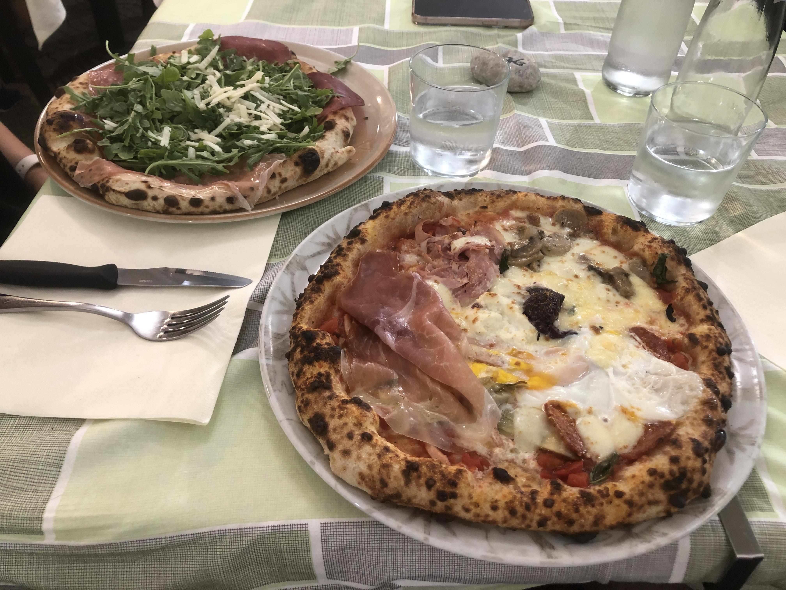
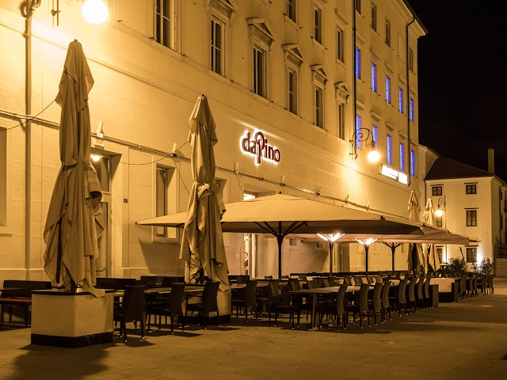
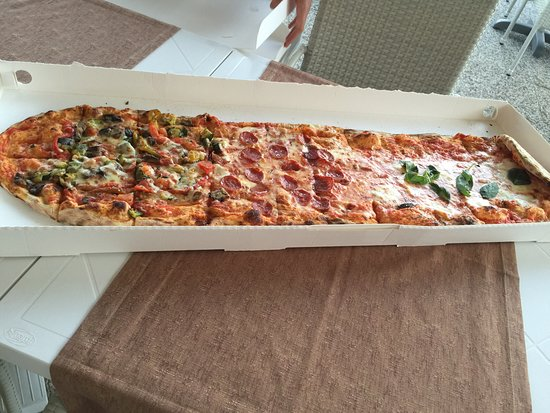
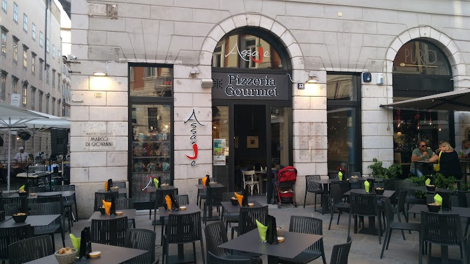
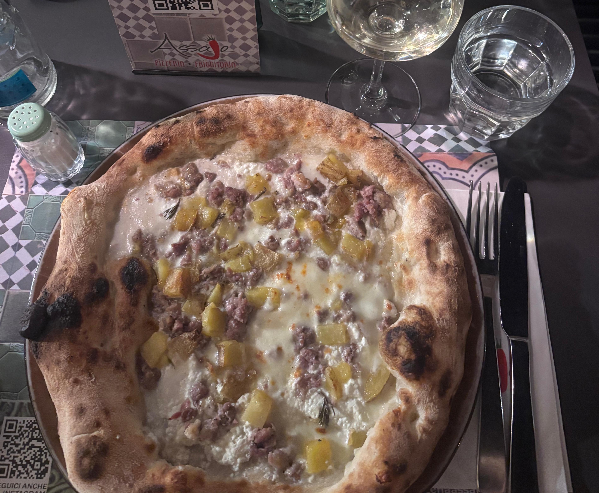
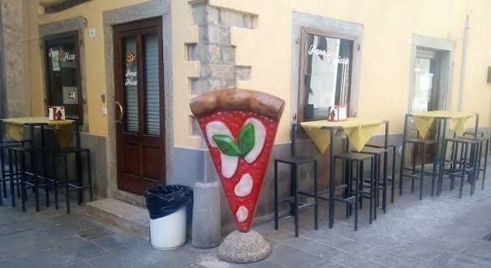
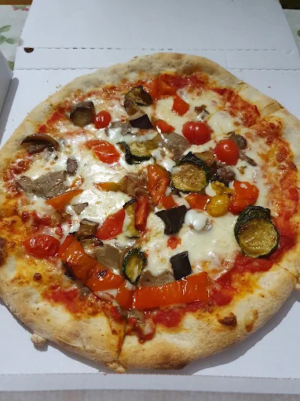

Migliori pizzerie a Trieste: la classifica
Per stilare questa classifica, ho dovuto spostarmi dal centro di Trieste alla vicina Muggia e al rione di Cattinara. Alcune delle migliori pizzerie, infatti, non si trovano in centro.
- Da Spetic
Perché ho messo questa pizzeria al primo posto?
Perché l'unica volta che ci sono stato mi ha colpito molto. Nonostante ci fosse molta gente, le pizze venivano servite subito ed erano molto buone. Non a caso, il ristorante ha vinto il premio per il maggior numero di pizze sfornate in un giorno. Le pizze sono gustose e il prezzo è giusto. La pizzeria si trova nel rione di Cattinara, vicino all'ospedale, ed è facilmente raggiungibile in autobus.Foto:


- Da Pino
Perché ho messo questo ristorante al secondo posto?
Perché mi ha colpito molto la possibilità di ordinare la pizza "al metro". Il locale non è solo una pizzeria, ma è anche un ristorante italiano che offre un'ampia selezione di piatti tipici. Il locale si trova in centro e spesso si ha difficoltà a trovare parcheggio.Foto:


- Assaje
Perché ho messo questa pizzeria al terzo posto?
La pizza è molto buona, tipica napoletana. Inoltre, c'è la possibilità di ordinare antipasti, primi piatti e dolci tipici napoletani. La pizzeria si trova in via Torino, una delle vie pedonali più frequentate il venerdì e sabato sera. Pertanto mangiare all'esterno può risultare scomodo a causa del continuo passaggio di persone. E' presente un parcheggio pubblico nelle vicinanze, anche se spesso si fa fatica a trovare posto.Foto:


- Pane e Pizza
Perché ho messo questa pizzeria al quarto posto?
Questa pizzeria si trova a Muggia, ed è un locale senza posti a sedere interni, che lavora esclusivamente come "take away". I prezzi sono convenienti e le pizze sono gustose. Nelle vicinanze si trova facilmente parcheggio. Tuttavia, i tempi di attesa possono essere molto lunghi e l'igiene del locale mi è sembrata un po' scarsa.Foto:


Leggi anche:
Ristoranti giapponesi
Ristoranti cinesi